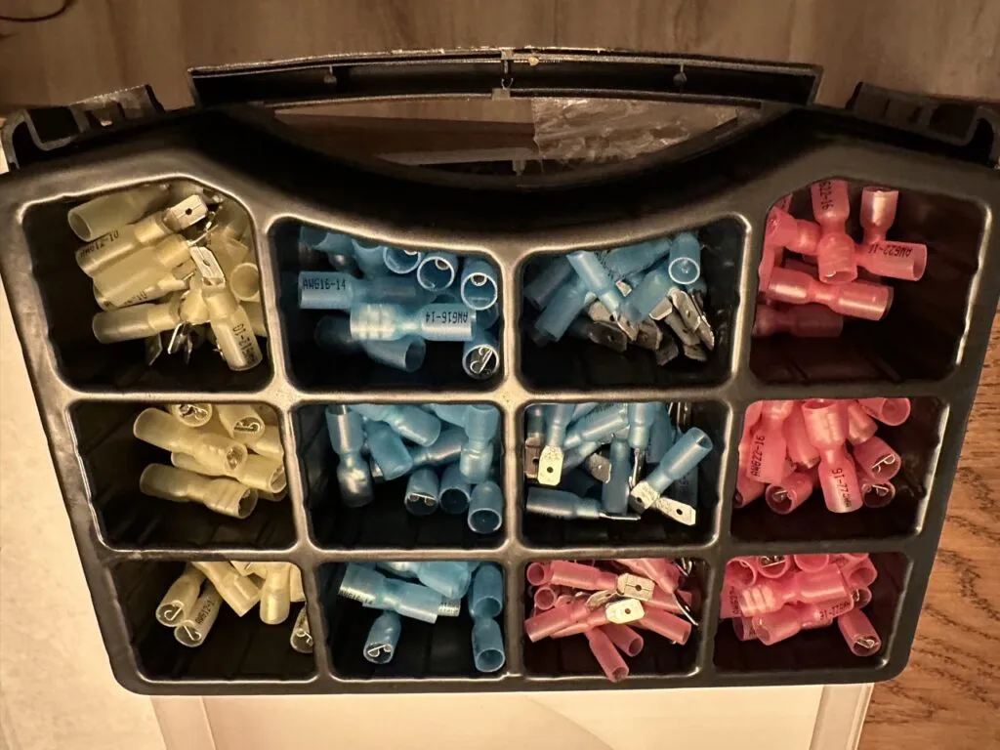
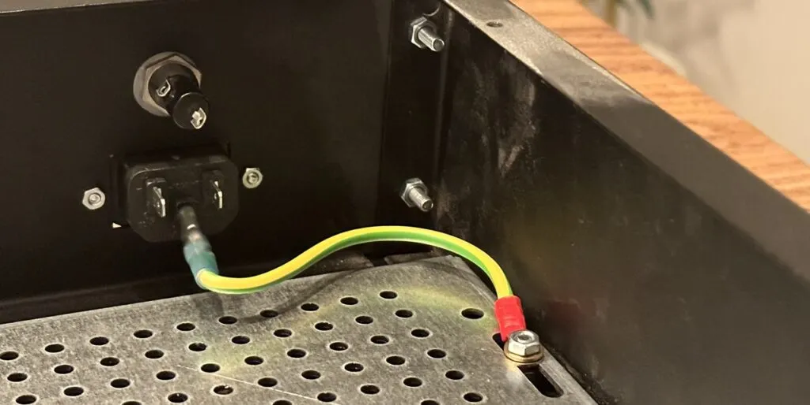

Primary Safety Connection
Now that the chassis is mostly assembled, and we have a power connector installed, the first order of business is to earth the chassis. As I mentioned previously, this serves the dual purpose of allowing the chassis to shield against electromagnetic radiation, but more importantly, protects the amplifier and its user against a potentially catastrophic fault.
Normally this type of fault involves a live wire or current going where it shouldn't. For example, a wire may slip loose at some point and hit the metal of the chassis. If this were to happen when a person wasn't looking, and there was no connection between the chassis and the earth pin of the IEC connector, then the entire chassis might suddenly be energized to mains voltage. Here in Spain that's 230 Volts. Walking up and then touching the amp not only would result in a massive shock, but it also could even kill a person.
When the chassis is properly earthed, any wire touching a metal part of the chassis will cause the live current to run into the ground wire and back to the breaker panel. Once there, in many homes there is a device called a residual current device that would trip, usually within 1 or 2 mains cycles. So on a 50 Hz mains, the device could trip in roughly 20 milliseconds, usually enough time to prevent cardiac arrest in the event of electrocution.
{kind=link}
The IEC connector typically uses crimp connectors, so we need to make a crimped earth wire. I usually try to size these as large as possible, especially since it's also going to help with the EMI reduction. I used a piece of 2.5mm^2 wire, which is the size we use in Spain for our receptacle branches. In North America that would be 14 AWG wire.
Whenever possible, especially when using crimp connectors for mains voltages, try to use insulated types as those will prevent a shock from happening when accidentally bumping them. In my prototype unit I used non-insulated types, and while I never ended up shocking myself, I was always a bit nervous when taking measurements with the power on as I could see the exposed metal connectors with 230V between them. Even a simple mistake like dropping a multimeter probe or small screwdriver could have caused a fault.
 Insulated Crimp Connectors
{kind=link}
The insulated connectors contain a section of heat shrink on the connector. Once the wire has been crimped, you can go ahead and shrink the tubing, resulting in a low-profile, and safer, connector.
In the Pesante chassis, my preferred place to connect the earth connection is on the through bolt holding the entire bottom plate in place. It's important that this screw be very secure, and never come loose through vibration. To that end, the screw should be held in place with a metal lock washer, and the circular crimp connector holding the earth onto the screw should have a star washer pressing against, ensuring there is always pressure and electrical contact.
 The Primary Safety Connection
{kind=link}
Once the earth connection is in place, it's always a good idea to do a continuity check between the earth lug and all the various points of the chassis with exposed metal, verifying that they are connected to earth. It's a good habit to get into that whenever you build any type of device or chassis you immediately connect the earth before starting anything else. That way you know the device is at least safe for accidental faults that may energize the chassis itself, and potentially stop any type of electrocution before it becomes serious.